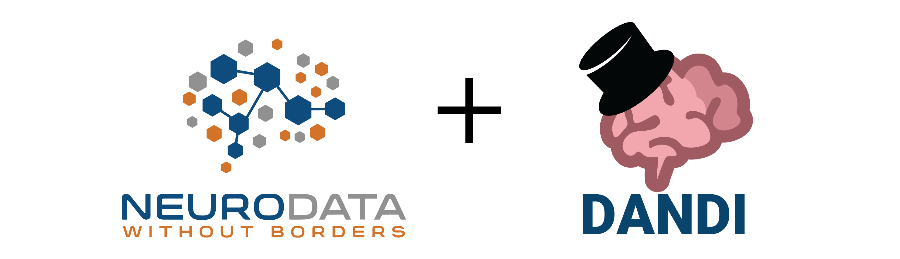
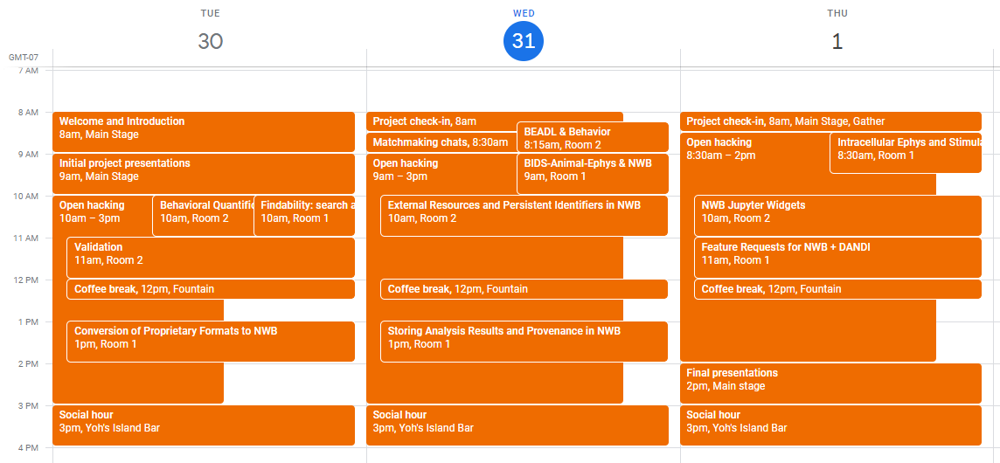

The final report for the 2021 NWB-DANDI Developer Hackathon is now available on GitHub (PDF) (LaTeX).
Neurodata Without Borders (NWB) and the DANDI neurophysiology data archive development teams are joining together to create a remote hackathon event for developers. In contrast to the User Days hackathons that focus on training users, this event will focus on bringing together the developers of the NWB data standard, the DANDI development team, and developers of tools in the NWB ecosystem.
This hackathon will enable participants to work intensively on an NWB or DANDI-related project with the assistance of core developers and others in the community. We will share updates with each other on NWB, DANDI, and related community projects. Together, we can develop and discuss ideas for solving technical problems that impact the broader community. Our goal is to foster collaboration and community among developers working on and with NWB and DANDI.
Please complete the registration form to attend the event.
We will be using the Gather spatial chat platform for most of the meeting. We will be using the Zoom videoconferencing platform for the breakout sessions. We will send an email in the week before the workshop with the meeting links.
In Gather, you control a video-game-like avatar with your arrow keys. When your avatar is near another attendee’s avatar, their video will appear and you will be able to speak with them. This platform allows for many small-group or one-on-one conversations to occur simultaneously and spontaneously. We hope that Gather will emulate the free-flowing social interactions of an in-person hackathon better than having everyone in a single Zoom meeting or messaging over Slack.
We have a few tips for using Gather, especially if it is your first time:
It is possible to use Zoom from the browser, but we recommend you install the Zoom app on your computer. See installation instructions here.
NWB POC: Oliver Rübel
DANDI POC: Satrajit S. Ghosh
Program Commitee: Ryan Ly, Benjamin Dichter, Andrew Tritt, Pam Baker, Oliver Rübel, Satrajit S Ghosh, Yaroslav O. Halchenko
Sponsored by The Kavli Foundation
If you are not experienced with NWB, please watch this introduction to NWB and optionally the subsequent lessons in Python (or in MATLAB here). Install the Python or MATLAB software for NWB:
If you are not experienced with DANDI, please read the DANDI documentation, browse the DANDI GitHub organization, and create an account on DANDI.
For instructions on how to create a project, see here
The lists below provides an overview of specific projects for which at least one or more attendees have signed up for to contribute to. Projects are collaborative in nature. If you are attending the hackathon and are interested in participating in any of the existing projects then please contact the team listed on the project page and add your name to the list of participants for the project.
The lists below provides an overview of planned breakout sessions during the hackathon. Breakout sessions are collaborative meetings focused on topics of common interest. Each breakout session has an assigned session chair to help coordinate the meeting.
To propose additional breakout sessions, please contact the hackathon organizing team.
Successful collaborations often begin from casual social interactions. To facilitate networking and social interactions during the hackathon, we will have a session of 2 one-on-one 15-minute chats between participants. Please fill out the form you received by email to let us know your interests, and we will pair you up during the hackathon.
Prior to the chat, please take a quick look at your partner’s webpage or list of publications (a link will be included in the email we send you), but there is no expectation that you will read their papers. Please also think about how to quickly describe your research interests bearing in mind your partner’s background.
During the chat, we recommend the following, but feel free to structure your meeting however you like.
These tips are largely adapted from the successful mindmatching from the neuromatch conference. See also this paper on the format and a matching algorithm.
The Neurodata Without Borders: Neurophysiology project (NWB, https://www.nwb.org/) is an effort to standardize the description and storage of neurophysiology data and metadata. NWB enables data sharing and reuse and reduces the energy barrier to applying data analysis both within and across labs. Several laboratories, including the Allen Institute for Brain Science, have wholeheartedly adopted NWB. The community needs to join forces to achieve data standardization in neurophysiology.
The Distributed Archives for Neurophysiology Data Integration (DANDI, https://www.dandiarchive.org/) is a platform for publishing, sharing, and processing neurophysiology data funded by the BRAIN Initiative. The platform is now available for data upload and distribution.
The purpose of the NWB+DANDI Developer Hackathon is to bring the neurophysiology developer community together to further the development NWB and DANDI and integration of NWB and DANDI with tools. Members of the community will work jointly on coding projects, exchange ideas and best practices, surface common needs, resolve coding issues, make feature requests, brainstorm about future collaboration, and make progress on current blockages.
All times are in Pacific Daylight Time (PDT; UTC-7)
This calendar view shows the hackathon agenda.
You can add this Google Calendar or iCal calendar to your personal calendar to see the sessions in your time zone.

Detailed agenda:
| Day 1 | Tuesday, March 30 |
|---|---|
| 8 - 9am (PDT) | Welcome and Introduction (Main Stage) |
| 9 - 10am | Project presentations (3 min presentation each) (Main Stage) |
| 10 - 3pm | Open Hacking |
| 10 - 11am | Breakout: Findability: search and metadata extraction (Room 1) |
| 10 - 11am | Breakout: Coordination meeting for behavioral quantification (Room 2) |
| 11 - 12pm | Breakout: Validation (Room 2) |
| 12 - 12:15pm | Coffee Break (Fountain) |
| 1 - 2pm | Breakout: Conversion of Proprietary Formats to NWB (Room 1) |
| 3 - 4pm | Social hour (Yoh's Island Bar) |
| Day 2 | Wednesday, March 31 |
|---|---|
| 8 - 8:30am | Project check-in (Main Stage) |
| 815-ish - 9am | Breakout: BEADL and Behavioral Metadata (Room 2) |
| 8:30 - 9am | Matchmaking chats |
| 9 - 10am | Breakout: Interoperability with Other Standards, in particular BIDS-animal-ephys (Room 1) |
| 10 - 3pm | Open Hacking |
| 10am - 11am | Breakout: External Resources and Persistent Identifiers in NWB (Room 2) |
| 12 - 12:15pm | Coffee Break (Fountain) |
| 1 - 2pm | Breakout: Storing Analysis Results and Provenance in NWB (Room 1) |
| 3 - 4pm | Social hour (Yoh's Island Bar) |
| Day 3 | Thursday, April 1 |
|---|---|
| 8 - 8:30am | Project check-in (Main Stage) |
| 9:30 - 3pm | Open Hacking |
| 8:30 - 9:30am | Breakout: Intracellular Ephys and Stimulation (Room 1) |
| 10 - 11am | Breakout: NWB Jupyter Widgets (Room 2) |
| 11 - 12pm | Feature Requests for NWB + DANDI (Room 1) |
| 12 - 12:15pm | Coffee Break (Fountain) |
| 2 - 3pm | Final presentations (Main Stage) |
| 3 - 4pm | Social hour (Yoh's Island Bar) |
We are dedicated to providing a harassment-free hackathon experience for everyone, regardless of gender, gender identity and expression, sexual orientation, disability, physical appearance, body size, race, age or religion. We do not tolerate harassment of event participants in any form. Sexual language and imagery is not appropriate for any event venue, including talks. event participants violating these rules may be sanctioned or expelled from the event without a refund at the discretion of the event organizers.
Harassment includes, but is not limited to:
Verbal comments that reinforce social structures of domination related to gender, gender identity and expression, sexual orientation, disability, physical appearance, body size, race, age or religion. Sexual images in public spaces Deliberate intimidation, stalking, or following Harassing photography or recording Sustained disruption of talks or other events Inappropriate physical contact Unwelcome sexual attention Advocating for, or encouraging, any of the above behaviour Enforcement Participants asked to stop any harassing behavior are expected to comply immediately.
Organizers and presenters are also subject to the anti-harassment policy. In particular, they should not use sexualized images, activities, or other material.
Event organisers may take action to redress anything designed to, or with the clear impact of, disrupting the event or making the environment hostile for any participants.
If a participant engages in harassing behaviour, event organisers have the responsibility to remind the offender about our Code of Conduct, and warn them that repeated inappropriate, uncivil, threatening, offensive, or harmful behavior can lead to a temporary or permanent ban from the event with no refund. The offending person(s) may also see affected their participation in future NWB and DANDI events.
We expect participants to follow these rules at all event venues and event-related social activities. We think people should follow these rules outside event activities too!
If someone makes you or anyone else feel unsafe or unwelcome, please report it as soon as possible to the events organizers. Harassment and other code of conduct violations reduce the value of our event for everyone. We want you to be happy at our event. People like you make our event a better place.
You can make a report either with your personal email or using an anonymous email.
When directly contributing to the NWB project, contributors are expected to follow the NWB Contributor Code of Conduct
This hackathon code of conduct is adapted from the Brainhack Code of Conduct.
This website and related content were prepared as an account of or to expedite work sponsored at least in part by the United States Government. While we strive to provide correct information, neither the United States Government nor any agency thereof, nor The Regents of the University of California, nor any of their employees, makes any warranty, express or implied, or assumes any legal responsibility for the accuracy, completeness, or usefulness of any information, apparatus, product, or process disclosed, or represents that its use would not infringe privately owned rights.
Reference herein to any specific commercial product, process, or service by its trade name, trademark, manufacturer, or otherwise, does not necessarily constitute or imply its endorsement, recommendation, or favoring by the United States Government or any agency thereof, or The Regents of the University of California. Use of the Laboratory or University’s name for endorsements is prohibited.
The views and opinions of authors expressed herein do not necessarily state or reflect those of the United States Government or any agency thereof or The Regents of the University of California. Neither Berkeley Lab nor its employees are agents of the US Government.
Berkeley Lab web pages link to many other websites. Such links do not constitute an endorsement of the content or company and we are not responsible for the content of such links.